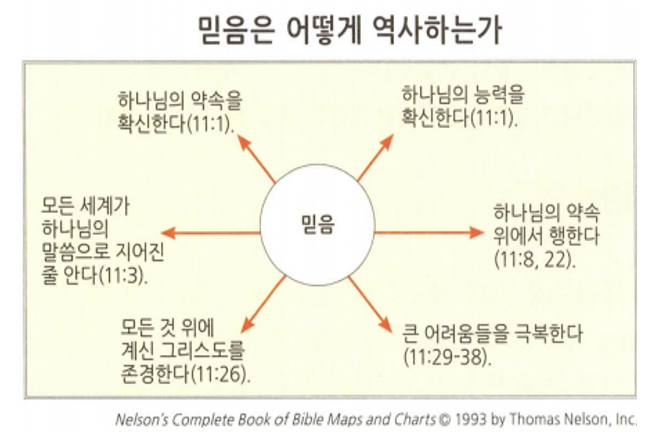
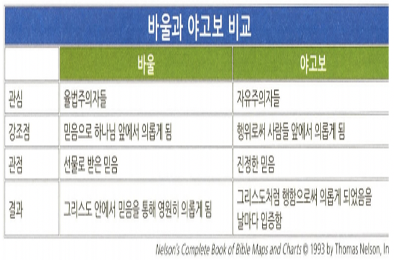
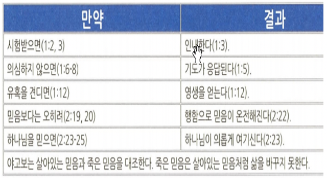

<!doctype html>
<html>
    <head>
        <meta charset="UTF-8">
        <meta name = "viewport" content = "width = device-width, initial-scale=1.0">
        <title>CF1 히브리서</title>
        <link rel="stylesheet" type="text/css" href="../../../css/pages.css">
    </head>
</html>

<body>
    <header>
        <h3><a href = "../../../index.html">HAGUS <br> HARDWARE</a></h3> 
        <ul id="main_menu">
        </ul>

        <script src = "../../../MainMenu.js"></script>
    </header>

    <section class="section">
    <div id = "tag_menu">
    </div>

    <script src = "../../../TIL_tag_menu.js"></script>

    <div id = "tag_list">
        <div class="l_title"><a href = "../../../TIL.html">Class.</a></div><hr>
        <div class = "l_subtitle"><div class = "title"><a href = "../../../TIL.html"><strong>[CF1] 히브리서 </div><div id="date">2021.06.13</div></strong></a></div>
             <!--====content====-->
        <div class = "content"> 
<pre>
구약의 관점과 그리스도의 관계
예수님은 대제사장

<span class = "h">핵심적인 사실</span>
<strong>저자</strong> : 미상(누가가 가장 유력)
<strong>연대</strong> : 65년 무렵
<strong>수신</strong> : 로마에 있던 크리스천들
<strong>상황</strong> : 핍박으로 일부가 유대교로 회귀하려고 함
<strong>목적</strong> : 박해를 피하기 위해 유대교 개종을 경고함
<strong>주제</strong> : 구약 선지자보다 탁월하게 뛰어난 예수 그리스도
<strong>기여</strong> : 기독론적 기여(그리스도의 대제사장, 중보자, 그의 희생의 완전무결함, 믿음의 주)
<strong>핵심 요절</strong> 
(히 12:1) 이러므로 우리에게 구름 같이 둘러싼 허다한 증인들이 있으니 모든 무거운 것과 얽매이기 쉬운 죄를 벗어 버리고 인내로써 우리 앞에 당한 경주를 하며

(히 12:2) 믿음의 주요 또 온전하게 하시는 이인 예수를 바라보자 그는 그 앞에 있는 기쁨을 위하여 십자가를 참으사 부끄러움을 개의치 아니하시더니 하나님 보좌 우편에 앉으셨느니라




<span class = "h">믿음의 전당 (히11장)</span>
아벨 / 모세 / 에녹 / 라합 / 아브라함 / 다윗 / 이삭 / 삼손 / 요셉 / 사무엘





<span class = "h">살아있는 믿음이란</span>



</pre>  
    <br>
    <br>
    <br>
    </div> 

    </div>

</section>

    
</body>


